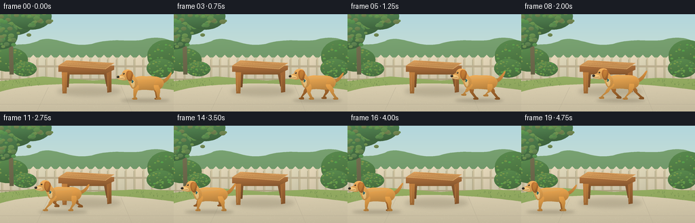
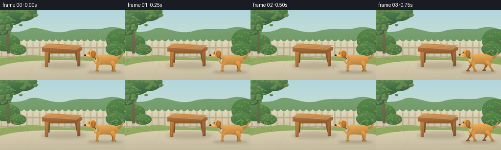

CODING AGENTS AS PIXEL WORLD MODELS
traex/GPT-6.1-Sol · dynamic_spatial_relationship_0002
点击播放 · 原生 RGB 像素
逐轮保存的候选
回放视频、检查图与代码变化。
每份候选均可单独播放。实际图片检查记录在下方工具轨迹中。
候选 01播放与检查图
点击播放 · 原生 RGB 像素


展开代码变化
--- 上一保存版本
+++ 本次保存版本
@@ -0,0 +1,197 @@
+from pathlib import Path
+import math
+import numpy as np
+from PIL import Image, ImageDraw, ImageFilter
+import artifact_io
+
+W,H,S=256,144,4
+rng=np.random.default_rng(23)
+
+def bezier_path(seq):
+ pts=[]; cur=None
+ for cmd, a in seq:
+ if cmd=='M': cur=a; pts.append(a)
+ elif cmd=='L': cur=a; pts.append(a)
+ elif cmd=='C':
+ p0=np.array(cur); p1=np.array(a[:2]); p2=np.array(a[2:4]); p3=np.array(a[4:6])
+ for t in np.linspace(0,1,18)[1:]:
+ p=(1-t)**3*p0+3*(1-t)**2*t*p1+3*(1-t)*t*t*p2+t**3*p3
+ pts.append(tuple(p))
+ cur=tuple(p3)
+ return pts
+
+def shape(im,pts,base,depth=0.22, texture=0.0):
+ xy=np.asarray(pts)*S
+ x0=max(0,int(np.floor(xy[:,0].min()))-2); x1=min(im.width,int(np.ceil(xy[:,0].max()))+3)
+ y0=max(0,int(np.floor(xy[:,1].min()))-2); y1=min(im.height,int(np.ceil(xy[:,1].max()))+3)
+ if x1<=x0 or y1<=y0:return
+ mask=Image.new('L',(x1-x0,y1-y0));d=ImageDraw.Draw(mask)
+ d.polygon([(x-x0,y-y0) for x,y in xy],fill=255)
+ yy,xx=np.mgrid[0:y1-y0,0:x1-x0].astype(float)
+ nx=xx/max(1,x1-x0); ny=yy/max(1,y1-y0)
+ lum=1+depth*(0.5-ny)+depth*.2*(.5-nx)
+ if texture:lum+=texture*np.sin(xx*.63+yy*.3)*np.sin(yy*.91)
+ arr=np.clip(np.array(base)[None,None,:]*lum[:,:,None],0,255).astype('uint8')
+ im.paste(Image.fromarray(arr),(x0,y0),mask)
+
+def ellipse(im,box,c,depth=.2):
+ x0,y0,x1,y1=box
+ pts=[((x0+x1)/2+(x1-x0)/2*math.cos(t),(y0+y1)/2+(y1-y0)/2*math.sin(t)) for t in np.linspace(0,math.tau,70)]
+ shape(im,pts,c,depth)
+
+def path(im,seq,c,depth=.2):shape(im,bezier_path(seq),c,depth)
+def line(im,pts,fill,width):
+ ImageDraw.Draw(im).line([(round(x*S),round(y*S)) for x,y in pts],fill=fill,width=round(width*S),joint='curve')
+
+def shadow(im,box,alpha=45,blur=3):
+ sh=Image.new('RGBA',im.size);d=ImageDraw.Draw(sh)
+ d.ellipse(tuple(int(x*S) for x in box),fill=(44,35,19,alpha))
+ sh=sh.filter(ImageFilter.GaussianBlur(blur*S));im.paste(Image.alpha_composite(im.convert('RGBA'),sh).convert('RGB'))
+
+# A warm garden, fixed camera, hand-built geometry and softly shaded materials.
+yy,xx=np.mgrid[:H*S,:W*S]
+base=np.empty((H*S,W*S,3),np.uint8)
+u=yy/(H*S)
+for c,(top,bottom) in enumerate(zip((178,214,221),(229,234,199))):base[:,:,c]=(top+(bottom-top)*u).astype('uint8')
+bg=Image.fromarray(base)
+# distant gently rolling greenery
+path(bg,[('M',(0,52)),('C',(25,40,32,49,55,40)),('C',(77,28,101,51,135,44)),('C',(169,34,187,42,209,38)),('C',(230,32,248,35,256,43)),('L',(256,99)),('L',(0,99))],(114,153,107),.12)
+# garden fence and warm horizontal rails
+shape(bg,[(0,64),(256,64),(256,100),(0,100)],(198,187,154),.1)
+for x in range(-8,265,13):
+ shape(bg,[(x,65),(x+5,60),(x+10,65),(x+10,102),(x,102)],(211+(x%3)*3,204,176),.12)
+ line(bg,[(x+10,67),(x+10,99)],(169,162,130),.7)
+line(bg,[(0,77),(256,77)],(187,174,143),3)
+line(bg,[(0,96),(256,96)],(172,161,127),2)
+# right/left bushes, softened distant leaves
+for cx,cy,rx,ry in [(12,67,29,18),(245,62,28,24),(237,80,21,14),(36,81,18,11)]:
+ ellipse(bg,(cx-rx,cy-ry,cx+rx,cy+ry),(79,122,69),.25)
+ for j in range(45):
+ x=cx+rng.uniform(-rx,rx); y=cy+rng.uniform(-ry,ry)
+ if ((x-cx)/rx)**2+((y-cy)/ry)**2<.9:
+ rr=rng.uniform(.6,2.0); ellipse(bg,(x-rr,y-rr*.65,x+rr,y+rr*.65),(int(rng.integers(86,127)),int(rng.integers(135,161)),73),.2)
+# thin tree on the far left and canopy at upper left
+path(bg,[('M',(14,89)),('L',(20,89)),('L',(19,43)),('L',(28,16)),('L',(23,15)),('L',(16,39)),('L',(11,15)),('L',(7,17)),('L',(13,49))],(112,108,78),.2)
+for cx,cy,rx,ry in [(-5,12,30,20),(22,10,29,21),(46,3,30,20),(1,32,25,20)]:
+ ellipse(bg,(cx-rx,cy-ry,cx+rx,cy+ry),(71,113,70),.3)
+ for j in range(40):
+ x=cx+rng.normal(0,rx*.45);y=cy+rng.normal(0,ry*.45)
+ r=rng.uniform(2,5)
+ ellipse(bg,(x-r,y-r*.7,x+r,y+r*.7),(int(rng.integers(84,112)),int(rng.integers(125,149)),78),.18)
+# lawn
+shape(bg,[(0,99),(63,92),(136,98),(201,94),(256,96),(256,144),(0,144)],(141,164,93),.12)
+# broad, quiet sand-colored terrace gives a clean stage
+path(bg,[('M',(-4,116)),('C',(34,104,70,105,98,103)),('C',(155,101,211,106,262,113)),('L',(260,144)),('L',(-4,144))],(207,196,167),.1)
+# few shallow stone joints, no distracting clutter
+for a,b in [((0,133),(256,133)),((71,108),(54,144)),((178,106),(194,144))]:
+ line(bg,[a,b],(186,176,151),.6)
+for j in range(850):
+ x=rng.uniform(0,256);y=rng.uniform(104,144)
+ if y<113 and (50<x<205):continue
+ col=(191,182,157) if j%2 else (218,207,179)
+ line(bg,[(x,y),(x+rng.uniform(.1,.5),y)],col,.25)
+# grass blades along rear edge, leaving table easy to identify
+for j in range(130):
+ x=rng.uniform(0,256);y=rng.uniform(98,107)
+ if 65<x<191:continue
+ line(bg,[(x,y),(x+rng.uniform(-1,1),y-rng.uniform(1,3))],(111,139,77),.45)
+# Table casting shadow back and to right.
+shadow(bg,(84,107,178,121),40,3)
+# All four wooden legs, and apron; perspective top.
+for pts,c in [([(97,79),(103,79),(101,108),(96,108)],(128,83,43)), ([(151,78),(157,77),(163,106),(157,107)],(130,85,46))]:shape(bg,pts,c,.26)
+shape(bg,[(91,82),(164,82),(164,89),(91,89)],(149,95,48),.26)
+shape(bg,[(91,86),(99,86),(98,117),(92,117)],(174,115,57),.25)
+shape(bg,[(157,86),(164,84),(164,115),(158,116)],(149,95,49),.25)
+line(bg,[(94,89),(94,114)],(192,132,71),.75)
+line(bg,[(159,90),(159,113)],(174,116,60),.7)
+# tabletop thickness then polished surface
+shape(bg,[(86,76),(168,76),(168,82),(155,88),(86,85)],(156,101,54),.24)
+shape(bg,[(86,76),(98,68),(168,72),(155,81)],(205,150,88),.2,.005)
+line(bg,[(86,76),(155,81),(168,72)],(224,171,106),.75)
+for q in [0.24,.49,.74]:
+ line(bg,[(86+12*q,76-8*q),(155+13*q,81-9*q)],(172,119,64),.55)
+# restrained wood grain following planks
+for j in range(26):
+ q=rng.uniform(.05,.95); a=90+10*q; b=150+12*q
+ start=rng.uniform(a,b-12);end=min(b,start+rng.uniform(9,27))
+ y=76-8*q+(start-(86+12*q))*5/69
+ line(bg,[(start,y),(end,y+(end-start)*5/69)],(190,132,73),.26)
+
+# Dog: golden retriever-like silhouette, pendulous ear, dark nose, collar and articulated trot.
+def draw_dog(im,x,i,run):
+ phase=(i-2)*1.82
+ ground=127.0
+ bounce=-1.8*run*abs(math.sin(phase))
+ oy=ground+bounce
+ def tr(p):return(x+p[0],oy+p[1])
+ def dp(seq,c,dep=.26):
+ ss=[]
+ for cmd,a in seq:
+ aa=[]
+ for k in range(0,len(a),2):aa.extend(tr((a[k],a[k+1])))
+ ss.append((cmd,tuple(aa)))
+ path(im,ss,c,dep)
+ def el(box,c,d=.2):ellipse(im,(x+box[0],oy+box[1],x+box[2],oy+box[3]),c,d)
+ def dl(pts,c,w):line(im,[tr(p) for p in pts],c,w)
+ shadow(im,(x-37,ground-2,x+35,ground+3),53,2.1)
+ def leg(root,ph,far=False,front=False):
+ r_x,r_y=root
+ swing=math.sin(ph)*run
+ lift=max(0,math.cos(ph))*7*run
+ footx=r_x+13*swing+(-2 if front else 4)
+ footy=-1-lift-bounce
+ knee_x=r_x+(3 if not front else -2)+5*swing
+ knee_y=-10-lift*.3
+ # softly curved taper down to a rounded paw
+ color=(155,97,42) if far else (202,141,65)
+ dp([('M',(r_x-3.2,r_y-2)),('C',(r_x-4,r_y+3,knee_x-2.7,knee_y-3,knee_x-2.4,knee_y)),('L',(footx-2.2,footy-2.1)),('C',(footx-5,footy-2.2,footx-5.4,footy+.2,footx-2,footy+.4)),('L',(footx+2.7,footy+.4)),('C',(footx+4,footy-1,footx+3,footy-3,footx+.8,footy-3.4)),('L',(knee_x+2.3,knee_y)),('C',(knee_x+4,knee_y-4,r_x+5,r_y+1,r_x+3.2,r_y-2))],color,.3)
+ if not far:
+ dl([(footx-2,footy-1),(footx-2,footy+.05)],(145,91,41),.42)
+ leg((13,-19),phase+math.pi,True)
+ leg((-14,-20),phase+math.pi*.95,True,True)
+ # tail raised but slightly curved, stronger at base
+ wag=1.5*math.sin(i*.7)
+ dp([('M',(20,-29)),('C',(27,-29,31,-34+wag,35,-39+wag)),('C',(38,-43+wag,39,-40+wag,36,-35+wag)),('C',(33,-29,29,-25,23,-24))],(197,133,60),.3)
+ # main body, rump, shoulder and curved belly
+ dp([('M',(-20,-28)),('C',(-17,-35,-10,-36,1,-35)),('C',(12,-35,20,-36,25,-29)),('C',(29,-23,23,-16,18,-15)),('C',(10,-13,1,-16,-7,-15)),('C',(-17,-12,-24,-19,-20,-28))],(211,150,73),.29)
+ # warm top highlight and small sculptural haunch
+ dp([('M',(-15,-32)),('C',(-3,-36,9,-33,18,-33)),('C',(13,-31,4,-30,-5,-30)),('C',(-12,-28,-16,-28,-15,-32))],(224,166,88),.09)
+ el((12,-30,24,-16),(204,142,66),.24)
+ leg((15,-20),phase,False)
+ leg((-14,-20),phase+math.pi*.08,False,True)
+ # neck flowing into deep chest
+ dp([('M',(-22,-41)),('C',(-19,-40,-17,-35,-13,-30)),('C',(-10,-23,-15,-16,-20,-17)),('C',(-23,-19,-24,-25,-27,-30)),('L',(-30,-37))],(216,155,77),.26)
+ # ivory throat bib
+ dp([('M',(-29,-31)),('C',(-25,-29,-22,-25,-20,-19)),('C',(-17,-17,-16,-23,-17,-28)),('L',(-25,-34))],(235,196,128),.16)
+ # collar, small dull metal tag
+ dp([('M',(-27,-33)),('L',(-24,-35)),('C',(-22,-32,-20,-29,-18,-28)),('L',(-20,-25)),('C',(-24,-27,-26,-30,-27,-33))],(54,109,112),.25)
+ el((-24,-29,-21,-25),(207,170,84),.18)
+ # head forehead transitioning into broad retriever muzzle
+ dp([('M',(-22,-44)),('C',(-29,-47,-34,-44,-35,-39)),('C',(-35,-38,-38,-37,-40,-36)),('L',(-42,-35)),('C',(-43,-32,-41,-30,-37,-30)),('C',(-34,-29,-30,-28,-26,-31)),('C',(-21,-31,-18,-39,-22,-44))],(222,162,85),.24)
+ # lighter muzzle and lower lip
+ dp([('M',(-40,-36)),('C',(-36,-36,-33,-35,-32,-34)),('L',(-31,-31)),('C',(-35,-29,-39,-30,-41,-31)),('L',(-42,-33))],(235,190,119),.2)
+ # floppy rich amber ear covering side of head
+ dp([('M',(-24,-43)),('C',(-19,-43,-18,-38,-20,-34)),('C',(-20,-28,-23,-26,-26,-29)),('C',(-29,-33,-30,-38,-28,-42)),('C',(-27,-43,-25,-44,-24,-43))],(168,103,46),.32)
+ dp([('M',(-25,-42)),('C',(-21,-43,-21,-39,-22,-36)),('C',(-23,-32,-24,-31,-25,-30)),('C',(-27,-32,-28,-38,-25,-42))],(188,122,52),.15)
+ # eyes, brow, nose, mouth for a readable friendly dog face
+ el((-34,-40,-31.5,-37.9),(53,39,25),.13)
+ el((-33.6,-39.75,-32.9,-39.1),(251,234,182),0)
+ dl([(-35,-41),(-32,-41.4)],(190,129,61),.55)
+ el((-43,-35.8,-39.1,-32.5),(48,43,35),.18)
+ el((-42.3,-35.5,-40.8,-34.8),(98,91,75),.1)
+ dl([(-40.5,-31.7),(-36.5,-32),(-33,-32.8)],(102,66,37),.62)
+ # short natural fur marks at shoulder and rump, not a heavy outline
+ for a,b in [((-15,-28),(-13,-25)),((-17,-26),(-15.6,-23.4)),((20,-22),(18.8,-20)),((6,-17),(8,-16.7))]:dl([a,b],(188,124,55),.35)
+
+frames=[]
+for i in range(20):
+ t=np.clip((i-2)/14,0,1)
+ ease=t*t*(3-2*t)
+ x=215-171*ease
+ run=min(1, max(0, math.sin(math.pi*t)*2.7))
+ im=bg.copy();draw_dog(im,x,i,run)
+ # final antialiasing and a subtle cohesive warm film tone
+ im=im.resize((W,H),Image.Resampling.LANCZOS)
+ frames.append(np.array(im.convert('RGB')))
+artifact_io.save(np.stack(frames),Path(__file__).parent)
+print('Saved 20 RGB frames, 256x144, 4 fps.')
可观测工具轨迹
实际执行的命令与返回图片。
命令 1exit 0
/bin/bash -lc 'ls -la; cat prompt.txt; cat GENERATION_RULES.md; cat task_spec.json'
命令 2exit 0
/bin/bash -lc "cat artifact_io.py; python - <<'PY' import PIL,numpy print(PIL.__version__) PY"
命令 3exit 0
/bin/bash -lc "cat > generate.py <<'PY'
from pathlib import Path
import math
import numpy as np
from PIL import Image, ImageDraw, ImageFilter
import artifact_io
W,H,S=256,144,4
rng=np.random.default_rng(23)
def bezier_path(seq):
pts=[]; cur=None
for cmd, a in seq:
if cmd=='M': cur=a; pts.append(a)
elif cmd=='L': cur=a; pts.append(a)
elif cmd=='C':
p0=np.array(cur); p1=np.array(a[:2]); p2=np.array(a[2:4]); p3=np.array(a[4:6])
for t in np.linspace(0,1,18)[1:]:
p=(1-t)**3*p0+3*(1-t)**2*t*p1+3*(1-t)*t*t*p2+t**3*p3
pts.append(tuple(p))
cur=tuple(p3)
return pts
def shape(im,pts,base,depth=0.22, texture=0.0):
xy=np.asarray(pts)*S
x0=max(0,int(np.floor(xy[:,0].min()))-2); x1=min(im.width,int(np.ceil(xy[:,0].max()))+3)
y0=max(0,int(np.floor(xy[:,1].min()))-2); y1=min(im.height,int(np.ceil(xy[:,1].max()))+3)
if x1<=x0 or y1<=y0:return
mask=Image.new('L',(x1-x0,y1-y0));d=ImageDraw.Draw(mask)
d.polygon([(x-x0,y-y0) for x,y in xy],fill=255)
yy,xx=np.mgrid[0:y1-y0,0:x1-x0].astype(float)
nx=xx/max(1,x1-x0); ny=yy/max(1,y1-y0)
lum=1+depth*(0.5-ny)+depth*.2*(.5-nx)
if texture:lum+=texture*np.sin(xx*.63+yy*.3)*np.sin(yy*.91)
arr=np.clip(np.array(base)[None,None,:]*lum[:,:,None],0,255).astype('uint8')
im.paste(Image.fromarray(arr),(x0,y0),mask)
def ellipse(im,box,c,depth=.2):
x0,y0,x1,y1=box
pts=[((x0+x1)/2+(x1-x0)/2*math.cos(t),(y0+y1)/2+(y1-y0)/2*math.sin(t)) for t in np.linspace(0,math.tau,70)]
shape(im,pts,c,depth)
def path(im,seq,c,depth=.2):shape(im,bezier_path(seq),c,depth)
def line(im,pts,fill,width):
ImageDraw.Draw(im).line([(round(x*S),round(y*S)) for x,y in pts],fill=fill,width=round(width*S),joint='curve')
def shadow(im,box,alpha=45,blur=3):
sh=Image.new('RGBA',im.size);d=ImageDraw.Draw(sh)
d.ellipse(tuple(int(x*S) for x in box),fill=(44,35,19,alpha))
sh=sh.filter(ImageFilter.GaussianBlur(blur*S));im.paste(Image.alpha_composite(im.convert('RGBA'),sh).convert('RGB'))
# A warm garden, fixed camera, hand-built geometry and softly shaded materials.
yy,xx=np.mgrid[:H*S,:W*S]
base=np.empty((H*S,W*S,3),np.uint8)
u=yy/(H*S)
for c,(top,bottom) in enumerate(zip((178,214,221),(229,234,199))):base[:,:,c]=(top+(bottom-top)*u).astype('uint8')
bg=Image.fromarray(base)
# distant gently rolling greenery
path(bg,[('M',(0,52)),('C',(25,40,32,49,55,40)),('C',(77,28,101,51,135,44)),('C',(169,34,187,42,209,38)),('C',(230,32,248,35,256,43)),('L',(256,99)),('L',(0,99))],(114,153,107),.12)
# garden fence and warm horizontal rails
shape(bg,[(0,64),(256,64),(256,100),(0,100)],(198,187,154),.1)
for x in range(-8,265,13):
shape(bg,[(x,65),(x+5,60),(x+10,65),(x+10,102),(x,102)],(211+(x%3)*3,204,176),.12)
line(bg,[(x+10,67),(x+10,99)],(169,162,130),.7)
line(bg,[(0,77),(256,77)],(187,174,143),3)
line(bg,[(0,96),(256,96)],(172,161,127),2)
# right/left bushes, softened distant leaves
for cx,cy,rx,ry in [(12,67,29,18),(245,62,28,24),(237,80,21,14),(36,81,18,11)]:
ellipse(bg,(cx-rx,cy-ry,cx+rx,cy+ry),(79,122,69),.25)
for j in range(45):
x=cx+rng.uniform(-rx,rx); y=cy+rng.uniform(-ry,ry)
if ((x-cx)/rx)**2+((y-cy)/ry)**2<.9:
rr=rng.uniform(.6,2.0); ellipse(bg,(x-rr,y-rr*.65,x+rr,y+rr*.65),(int(rng.integers(86,127)),int(rng.integers(135,161)),73),.2)
# thin tree on the far left and canopy at upper left
path(bg,[('M',(14,89)),('L',(20,89)),('L',(19,43)),('L',(28,16)),('L',(23,15)),('L',(16,39)),('L',(11,15)),('L',(7,17)),('L',(13,49))],(112,108,78),.2)
for cx,cy,rx,ry in [(-5,12,30,20),(22,10,29,21),(46,3,30,20),(1,32,25,20)]:
ellipse(bg,(cx-rx,cy-ry,cx+rx,cy+ry),(71,113,70),.3)
for j in range(40):
x=cx+rng.normal(0,rx*.45);y=cy+rng.normal(0,ry*.45)
r=rng.uniform(2,5)
ellipse(bg,(x-r,y-r*.7,x+r,y+r*.7),(int(rng.integers(84,112)),int(rng.integers(125,149)),78),.18)
# lawn
shape(bg,[(0,99),(63,92),(136,98),(201,94),(256,96),(256,144),(0,144)],(141,164,93),.12)
# broad, quiet sand-colored terrace gives a clean stage
path(bg,[('M',(-4,116)),('C',(34,104,70,105,98,103)),('C',(155,101,211,106,262,113)),('L',(260,144)),('L',(-4,144))],(207,196,167),.1)
# few shallow stone joints, no distracting clutter
for a,b in [((0,133),(256,133)),((71,108),(54,144)),((178,106),(194,144))]:
line(bg,[a,b],(186,176,151),.6)
for j in range(850):
x=rng.uniform(0,256);y=rng.uniform(104,144)
if y<113 and (50<x<205):continue
col=(191,182,157) if j%2 else (218,207,179)
line(bg,[(x,y),(x+rng.uniform(.1,.5),y)],col,.25)
# grass blades along rear edge, leaving table easy to identify
for j in range(130):
x=rng.uniform(0,256);y=rng.uniform(98,107)
if 65<x<191:continue
line(bg,[(x,y),(x+rng.uniform(-1,1),y-rng.uniform(1,3))],(111,139,77),.45)
# Table casting shadow back and to right.
shadow(bg,(84,107,178,121),40,3)
# All four wooden legs, and apron; perspective top.
for pts,c in [([(97,79),(103,79),(101,108),(96,108)],(128,83,43)), ([(151,78),(157,77),(163,106),(157,107)],(130,85,46))]:shape(bg,pts,c,.26)
shape(bg,[(91,82),(164,82),(164,89),(91,89)],(149,95,48),.26)
shape(bg,[(91,86),(99,86),(98,117),(92,117)],(174,115,57),.25)
shape(bg,[(157,86),(164,84),(164,115),(158,116)],(149,95,49),.25)
line(bg,[(94,89),(94,114)],(192,132,71),.75)
line(bg,[(159,90),(159,113)],(174,116,60),.7)
# tabletop thickness then polished surface
shape(bg,[(86,76),(168,76),(168,82),(155,88),(86,85)],(156,101,54),.24)
shape(bg,[(86,76),(98,68),(168,72),(155,81)],(205,150,88),.2,.005)
line(bg,[(86,76),(155,81),(168,72)],(224,171,106),.75)
for q in [0.24,.49,.74]:
line(bg,[(86+12*q,76-8*q),(155+13*q,81-9*q)],(172,119,64),.55)
# restrained wood grain following planks
for j in range(26):
q=rng.uniform(.05,.95); a=90+10*q; b=150+12*q
start=rng.uniform(a,b-12);end=min(b,start+rng.uniform(9,27))
y=76-8*q+(start-(86+12*q))*5/69
line(bg,[(start,y),(end,y+(end-start)*5/69)],(190,132,73),.26)
# Dog: golden retriever-like silhouette, pendulous ear, dark nose, collar and articulated trot.
def draw_dog(im,x,i,run):
phase=(i-2)*1.82
ground=127.0
bounce=-1.8*run*abs(math.sin(phase))
oy=ground+bounce
def tr(p):return(x+p[0],oy+p[1])
def dp(seq,c,dep=.26):
ss=[]
for cmd,a in seq:
aa=[]
for k in range(0,len(a),2):aa.extend(tr((a[k],a[k+1])))
ss.append((cmd,tuple(aa)))
path(im,ss,c,dep)
def el(box,c,d=.2):ellipse(im,(x+box[0],oy+box[1],x+box[2],oy+box[3]),c,d)
def dl(pts,c,w):line(im,[tr(p) for p in pts],c,w)
shadow(im,(x-37,ground-2,x+35,ground+3),53,2.1)
def leg(root,ph,far=False,front=False):
r_x,r_y=root
swing=math.sin(ph)*run
lift=max(0,math.cos(ph))*7*run
footx=r_x+13*swing+(-2 if front else 4)
footy=-1-lift-bounce
knee_x=r_x+(3 if not front else -2)+5*swing
knee_y=-10-lift*.3
# softly curved taper down to a rounded paw
color=(155,97,42) if far else (202,141,65)
dp([('M',(r_x-3.2,r_y-2)),('C',(r_x-4,r_y+3,knee_x-2.7,knee_y-3,knee_x-2.4,knee_y)),('L',(footx-2.2,footy-2.1)),('C',(footx-5,footy-2.2,footx-5.4,footy+.2,footx-2,footy+.4)),('L',(footx+2.7,footy+.4)),('C',(footx+4,footy-1,footx+3,footy-3,footx+.8,footy-3.4)),('L',(knee_x+2.3,knee_y)),('C',(knee_x+4,knee_y-4,r_x+5,r_y+1,r_x+3.2,r_y-2))],color,.3)
if not far:
dl([(footx-2,footy-1),(footx-2,footy+.05)],(145,91,41),.42)
leg((13,-19),phase+math.pi,True)
leg((-14,-20),phase+math.pi*.95,True,True)
# tail raised but slightly curved, stronger at base
wag=1.5*math.sin(i*.7)
dp([('M',(20,-29)),('C',(27,-29,31,-34+wag,35,-39+wag)),('C',(38,-43+wag,39,-40+wag,36,-35+wag)),('C',(33,-29,29,-25,23,-24))],(197,133,60),.3)
# main body, rump, shoulder and curved belly
dp([('M',(-20,-28)),('C',(-17,-35,-10,-36,1,-35)),('C',(12,-35,20,-36,25,-29)),('C',(29,-23,23,-16,18,-15)),('C',(10,-13,1,-16,-7,-15)),('C',(-17,-12,-24,-19,-20,-28))],(211,150,73),.29)
# warm top highlight and small sculptural haunch
dp([('M',(-15,-32)),('C',(-3,-36,9,-33,18,-33)),('C',(13,-31,4,-30,-5,-30)),('C',(-12,-28,-16,-28,-15,-32))],(224,166,88),.09)
el((12,-30,24,-16),(204,142,66),.24)
leg((15,-20),phase,False)
leg((-14,-20),phase+math.pi*.08,False,True)
# neck flowing into deep chest
dp([('M',(-22,-41)),('C',(-19,-40,-17,-35,-13,-30)),('C',(-10,-23,-15,-16,-20,-17)),('C',(-23,-19,-24,-25,-27,-30)),('L',(-30,-37))],(216,155,77),.26)
# ivory throat bib
dp([('M',(-29,-31)),('C',(-25,-29,-22,-25,-20,-19)),('C',(-17,-17,-16,-23,-17,-28)),('L',(-25,-34))],(235,196,128),.16)
# collar, small dull metal tag
dp([('M',(-27,-33)),('L',(-24,-35)),('C',(-22,-32,-20,-29,-18,-28)),('L',(-20,-25)),('C',(-24,-27,-26,-30,-27,-33))],(54,109,112),.25)
el((-24,-29,-21,-25),(207,170,84),.18)
# head forehead transitioning into broad retriever muzzle
dp([('M',(-22,-44)),('C',(-29,-47,-34,-44,-35,-39)),('C',(-35,-38,-38,-37,-40,-36)),('L',(-42,-35)),('C',(-43,-32,-41,-30,-37,-30)),('C',(-34,-29,-30,-28,-26,-31)),('C',(-21,-31,-18,-39,-22,-44))],(222,162,85),.24)
# lighter muzzle and lower lip
dp([('M',(-40,-36)),('C',(-36,-36,-33,-35,-32,-34)),('L',(-31,-31)),('C',(-35,-29,-39,-30,-41,-31)),('L',(-42,-33))],(235,190,119),.2)
# floppy rich amber ear covering side of head
dp([('M',(-24,-43)),('C',(-19,-43,-18,-38,-20,-34)),('C',(-20,-28,-23,-26,-26,-29)),('C',(-29,-33,-30,-38,-28,-42)),('C',(-27,-43,-25,-44,-24,-43))],(168,103,46),.32)
dp([('M',(-25,-42)),('C',(-21,-43,-21,-39,-22,-36)),('C',(-23,-32,-24,-31,-25,-30)),('C',(-27,-32,-28,-38,-25,-42))],(188,122,52),.15)
# eyes, brow, nose, mouth for a readable friendly dog face
el((-34,-40,-31.5,-37.9),(53,39,25),.13)
el((-33.6,-39.75,-32.9,-39.1),(251,234,182),0)
dl([(-35,-41),(-32,-41.4)],(190,129,61),.55)
el((-43,-35.8,-39.1,-32.5),(48,43,35),.18)
el((-42.3,-35.5,-40.8,-34.8),(98,91,75),.1)
dl([(-40.5,-31.7),(-36.5,-32),(-33,-32.8)],(102,66,37),.62)
# short natural fur marks at shoulder and rump, not a heavy outline
for a,b in [((-15,-28),(-13,-25)),((-17,-26),(-15.6,-23.4)),((20,-22),(18.8,-20)),((6,-17),(8,-16.7))]:dl([a,b],(188,124,55),.35)
frames=[]
for i in range(20):
t=np.clip((i-2)/14,0,1)
ease=t*t*(3-2*t)
x=215-171*ease
run=min(1, max(0, math.sin(math.pi*t)*2.7))
im=bg.copy();draw_dog(im,x,i,run)
# final antialiasing and a subtle cohesive warm film tone
im=im.resize((W,H),Image.Resampling.LANCZOS)
frames.append(np.array(im.convert('RGB')))
artifact_io.save(np.stack(frames),Path(__file__).parent)
print('Saved 20 RGB frames, 256x144, 4 fps.')
PY
python generate.py"命令 4exit 0
/bin/bash -lc "python - <<'PY'
from pathlib import Path
import numpy as np
from PIL import Image
p=Path('.')
a=np.load(p/'pixels.npz')['pixels']
assert a.shape==(144,256,20)
assert len(list((p/'frames').glob('*.png')))==20
assert all(Image.open(p/'frames'/f'{i:02d}.png').mode=='RGB' for i in range(20))
assert (p/'index.html').is_file()
print('Validated artifacts:', a.shape, '20 RGB PNGs and HTML video player')
PY"保存候选 1 份；完成命令 4 次；可验证图片返回 0 张。原始 API 响应与完整日志保留在本地。